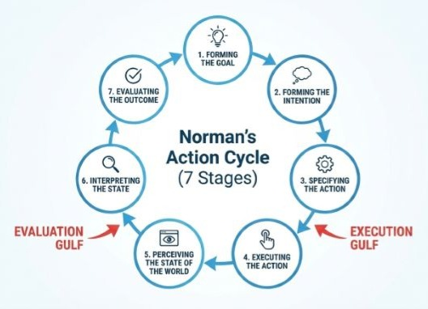
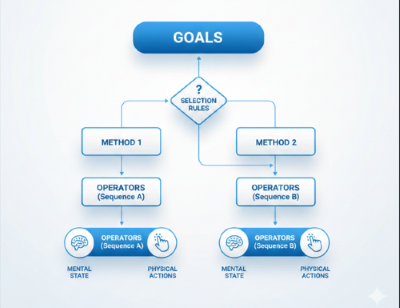
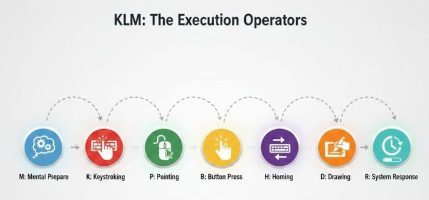

Model-Based Evaluation
In Human–Computer Interaction, different cognitive models are used to analyse user behaviour. Each model focuses on a different level of interaction, such as understanding user thinking, task structure, or execution speed.
Norman vs GOMS vs KLM
| Model | Type | Main Purpose | Outcome |
|---|---|---|---|
| Norman | Descriptive | Explains how users form goals, act, and evaluate feedback | Identifies usability problems |
| GOMS | Analytical | Describes task steps for skilled users | Compares task efficiency |
| KLM | Quantitative | Breaks actions into physical operators | Estimates execution time |
Norman’s Action Cycle
Norman’s model focuses on the mental process of interaction. It explains how users decide what to do, perform actions, and check whether the system response matches their goal.
- Establishing the goal: This is the user’s notion of what needs to be done and is framed in terms of the domain, in the task language.
- Forming the intention: The goal is translated into the more specific intention to reach the goal.
- Specifying the action sequence: The intention is translated into the actual actions that will reach the goal, before it can be executed by the user.
- Executing the action: The user performs the physical action sequence to interact with the system.
- Perceiving the system state: The user perceives the new state of the system, after execution of the action sequence.
- Interpreting the system state: The user interprets the perceived state in terms of his expectations.
- Evaluating the system state with respect to the goals and intentions: The user evaluates the new state according to the original goals to see if the interaction has been successful.
The model highlights two common problems: The gulf of execution (the difference between the user’s formulation of the actions to reach the goal and the actions allowed by the system) and the gulf of evaluation (the distance between the physical presentation of the system state and the expectation of the user).
GOMS Model
GOMS describes how an experienced user completes a task, focusing on the structure of actions.
- Goals: The user’s objectives, and points to return for evaluation or error recovery.
- Operators: Basic actions affecting system or mental state.
- Methods: Procedures to achieve goals, decomposed into subgoals.
- Selection Rules: How the user chooses between methods when multiple exist.
Keystroke-Level Model (KLM)
- K: Keystroking
- B: Mouse button press
- P: Pointing with mouse
- H: Homing hands
- D: Drawing lines
- M: Mental preparation
- R: System response
| Operator | Remarks | Time (s) |
|---|---|---|
| K | Press key (good typist 90 wpm) | 0.12 |
| K | Press key (poor typist 40 wpm) | 0.28 |
| K | Press key (non-typist) | 1.20 |
| B | Mouse button press – down/up | 0.10 |
| B | Mouse button press – click | 0.20 |